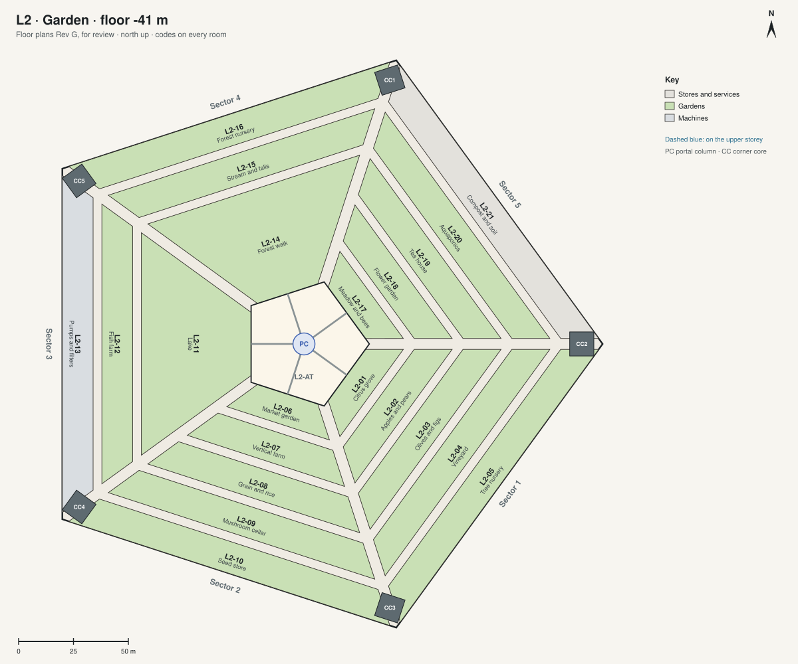

L2 · Garden floor -41 m, 16 m high
Sixteen metres tall under a sky of lamps: the orchard, the farm, the lake that is the water reserve, the forest and the meadow.

| Code | Room | What it is for | Also | Size | Two of a kind |
|---|---|---|---|---|---|
| L2-01 | Citrus grove | Oranges, lemons and limes under the sky of lamps. | 550 m² | ||
| L2-02 | Apples and pears | An orchard of apples and pears. | 910 m² | ||
| L2-03 | Olives and figs | Olives for oil, and figs. | 1280 m² | ||
| L2-04 | Vineyard | Vines for grapes and wine. | 1650 m² | ||
| L2-05 | Tree nursery | Young trees for the orchards and the city. | 2010 m² | ||
| L2-06 | Market garden | Vegetables and herbs, picked fresh. | 550 m² | ||
| L2-07 | Vertical farm | Racks of greens under LEDs, the highest yields. | 910 m² | ||
| L2-08 | Grain and rice | Wheat, rice and beans. | 1280 m² | ||
| L2-09 | Mushroom cellar | Mushrooms grown on the garden's waste. | 1650 m² | ||
| L2-10 | Seed store | The farm's working seeds. | 2010 m² | L5-09 Seed vault | |
| L2-11 | Lake | A lake that is also the house's water reserve. | Swimming and boating in summer light. | 3260 m² | |
| L2-12 | Fish farm | Fish for the table, fed from the gardens. | 1650 m² | ||
| L2-13 | Pumps and filters | The lake's pumps and filters. | 2010 m² | ||
| L2-14 | Forest walk | A forest with paths, under trees 12 m tall. | 3260 m² | ||
| L2-15 | Stream and falls | A stream that falls into the lake. | 1650 m² | ||
| L2-16 | Forest nursery | Young trees and plants for the forest. | 2010 m² | ||
| L2-17 | Meadow and bees | A meadow of wild flowers, with hives. | 550 m² | ||
| L2-18 | Flower garden | Flowers for the house. | 910 m² | ||
| L2-19 | Tea house | A tea house in the meadow: tea, quiet, contemplation. | Small meetings away from the house. (The Crown's tea house of Rev B is folded into this one.) | 1280 m² | |
| L2-20 | Aquaponics | Fish and plants in one loop of water. | 1650 m² | ||
| L2-21 | Compost and soil | Making soil from the house's waste. | 2010 m² |
Shared on this level: L2-AT atrium terrace; L2-BR bridges; L2-PC portal column; L2-ST streets; L2-AV avenues; L2-CC corner cores; CC1 to CC5 the corner cores.